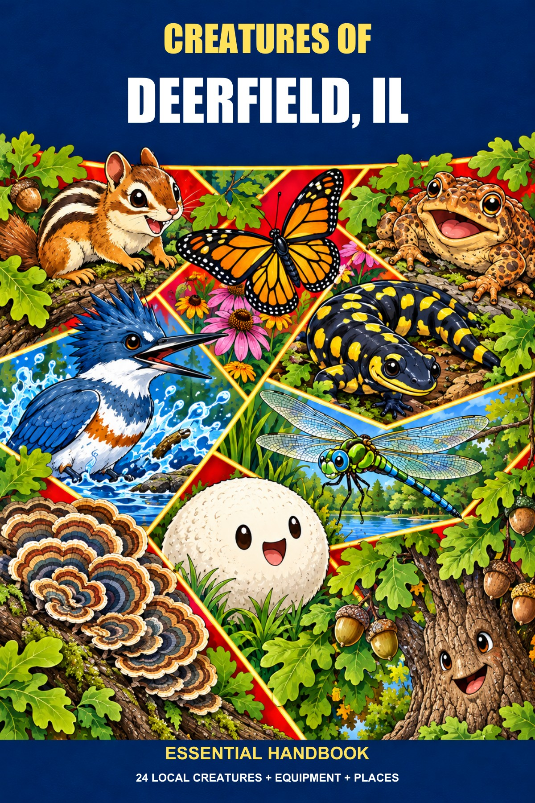
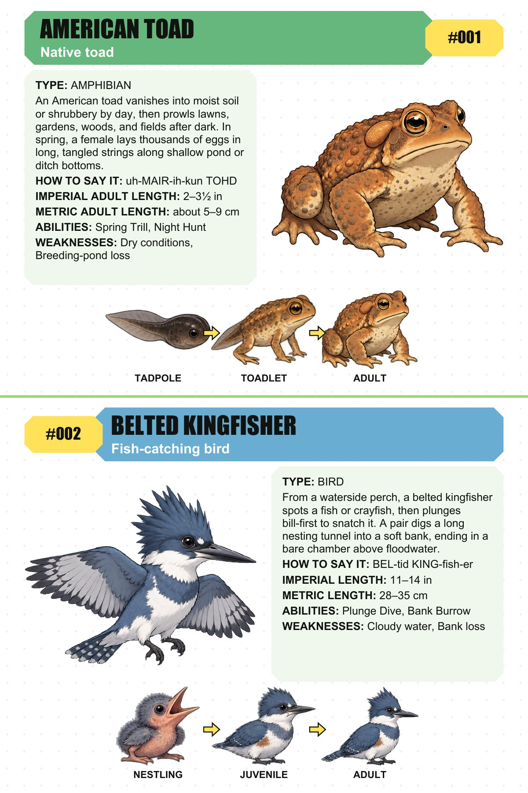

24 local creatures
From American toads and belted kingfishers to big dipper fireflies, bold jumpers, trees, and fungi.
Field guides for the places we call home
A big-hearted field guide to the creatures already living around you: the backyard regulars, pond-side lurkers, and tiny local legends.
Start with a place. See who’s been there all along.

Not just a list of species
Every city has a cast of characters tucked into its parks, waterways, gardens, and cracks in the sidewalk.
Creature Handbooks give those local lives a little main-character energy: illustrated profiles, memorable powers and weaknesses, the stages they grow through, and places to look for them.
From American toads and belted kingfishers to big dipper fireflies, bold jumpers, trees, and fungi.
See the toad go from tadpole to adult, with each creature’s quirks, abilities, and vulnerabilities.
Field kits, careful-use notes, six featured sites, and a creature finder to keep exploring.
A real place, a real sample
Flip through five pages from the complete 19-page Creatures of Deerfield, IL handbook.
Read the full sample
The field guide, opened up
American toad and belted kingfisher profiles, complete with abilities, weaknesses, and life-stage forms.
Start with your place
Tell us where you’d like a handbook to explore. We’ll follow up to talk about the idea.
Your request stays with you until you choose to send it from your email app.
A FEW DETAILS
READY WHEN YOU ARE
The email draft option will be available once the contact details are confirmed. You can still copy your request.
No message has been sent. If you open an email draft, you can review it and choose whether to send.